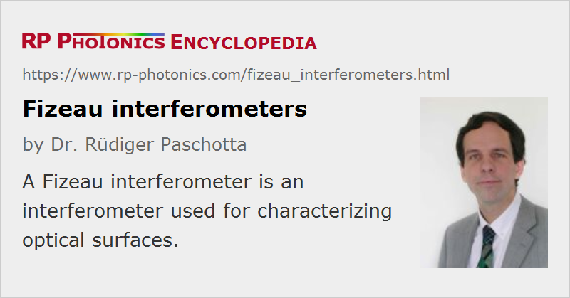

Fizeau Interferometers
Definition: interferometers for investigating optical surfaces
More general terms: interferometers, optical metrology instruments
German: Fizeau-Interferometer
Categories: photonic devices, optical metrology
How to cite the article; suggest additional literature
Author: Dr. Rüdiger Paschotta
Fizeau interferometers, named after Hippolyte Fizeau, are a common type of interferometers which are used for characterizing optical surfaces, e.g. of mirrors or prisms.
Operation Principle
One exploits interference between reflections at a test surface and a nearby reference surface, as shown in Figure 1. The reference surface in Figure 1 is the right surface of an optical flat, having a particularly high flatness and also otherwise high surface quality. Normally, the reference surface is slightly tilted (e.g. controlled with a micrometer screw) against the tested surface, so that for ideal surface quality one would obtain a regular pattern of straight interference fringes (stripes). Any deviations between the surface shapes lead to distortions of those stripes (Fizeau curves).
The tested surface does not need to be highly reflective; its reflectivity should just be high enough to produce a clear interference pattern.
Influences of reflections from the left side of the optical flat may be minimized with an anti-reflection coating, with a wedge shape of the optical flat and in addition sometimes exploiting the limited coherence length of the used light.
The used light source can be a laser, but one can also use other light sources such as gas discharge lamps. The light does not need to be highly monochromatic if the distance between the test surface and the reference surface is small.
Comparison with Other Interferometers
A Fizeau interferometer can be seen as a simpler alternative to a Twyman–Green interferometer. Its advantage is that interference occurs only between two closely spaced parts, and only the relative distance of those last be carefully controlled. The orientation of the beam splitter, for example, is not critical. On the other hand, the Twyman–Green interferometer is more flexible, for example concerning the optimization of fringe contrast for different reflectivities of the investigated samples.
There is also a similarity to a Fabry–Pérot interferometer. The Fizeau interferometer can be considered as a Fabry–Pérot interferometer made for surface characterizations. Typically, it does not exhibit sharp resonances due to low surface reflectivities.
Suppliers
The RP Photonics Buyer's Guide contains 2 suppliers for Fizeau interferometers.
Questions and Comments from Users
Here you can submit questions and comments. As far as they get accepted by the author, they will appear above this paragraph together with the author’s answer. The author will decide on acceptance based on certain criteria. Essentially, the issue must be of sufficiently broad interest.
Please do not enter personal data here; we would otherwise delete it soon. (See also our privacy declaration.) If you wish to receive personal feedback or consultancy from the author, please contact him e.g. via e-mail.
By submitting the information, you give your consent to the potential publication of your inputs on our website according to our rules. (If you later retract your consent, we will delete those inputs.) As your inputs are first reviewed by the author, they may be published with some delay.
Bibliography
| [1] | Y. H. Meyer, “Fringe shape with an interferential wedge”, J. Opt. Soc. Am. 71 (10), 1255 (1981), doi:10.1364/JOSA.71.001255 |
| [2] | T. T. Kajava, H. M. Lauranto, and A. T. Friberg, “ Interference pattern of the Fizeau interferometer”, J. Opt. Soc. Am. A 11 (7), 2045 (1994), doi:10.1364/JOSAA.11.002045 |
See also: interferometers, Michelson interferometers, Twyman–Green interferometers, optical flats
and other articles in the categories photonic devices, optical metrology
|  |
If you like this page, please share the link with your friends and colleagues, e.g. via social media:
These sharing buttons are implemented in a privacy-friendly way!